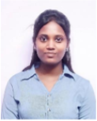

Professor-funded scholarship
Sundareswari Thiyagarajan
Co-authored the lab's drug–drug interaction extraction paper on machine learning and transformer-based models, published via SSRN and bioRxiv.
Inha University · South Korea